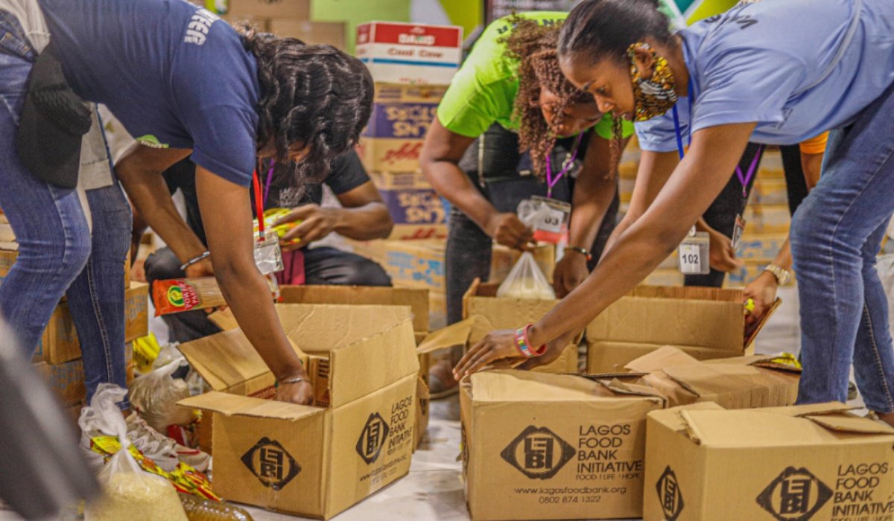

Nossa Missão
Somos dedicados a construir um futuro mais justo e equitativo para todos.
Nós acreditamos que a base de uma sociedade forte é a garantia de que as necessidades humanas essenciais educação e alimentação sejam atendidas, especialmente nas comunidades mais vulneráveis. É por isso que a Transformando Vidas atua na linha de frente:
- Combate à Insegurança Alimentar: Garantimos que nenhuma família vá para a cama com fome, distribuindo refeições e cestas básicas de forma constante e humanizada, promovendo a dignidade e a saúde da nossa comunidade.
- Capacitação e Futuro: Investimos no potencial inexplorado da juventude, oferecendo programas de educação digital e capacitação profissional. Nosso objetivo não é apenas fornecer conhecimento, mas abrir portas para o mercado de trabalho, quebrando o ciclo da pobreza e construindo autonomia.

Informações de Contato
Endereço: Rua dos Heróis, 123Telefone: (00) 99999-9999
Email: contato@ong.org